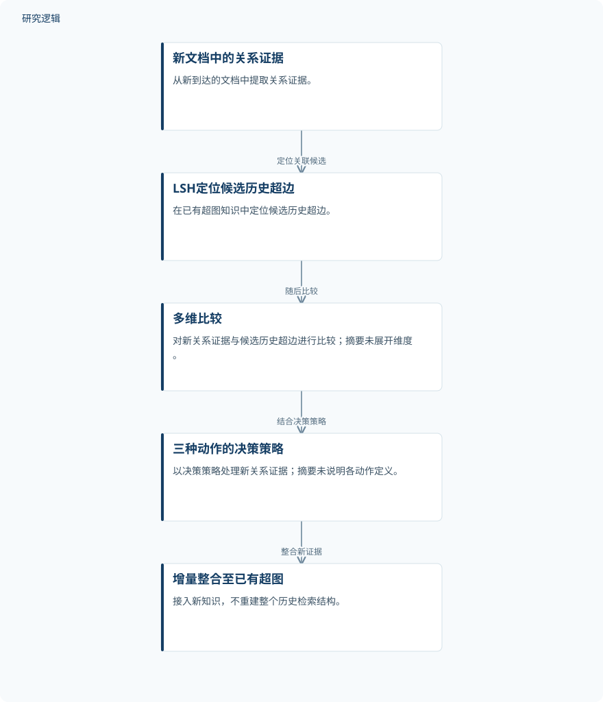

摘要解读
HyperRAG-IHM：面向语料扩展的超图检索增强生成增量超边维护
HyperRAG-IHM: Incremental Hyperedge Maintenance for Hypergraph RAG under Corpus Expansion
解读更新 2026-11-10 11:29 · 依据公开摘要整理，未核验全文细节
知识库持续加入新文档时，结构化RAG能否不重建历史检索结构，仍保持回答质量？HyperRAG-IHM以增量超边维护回应这一问题，阅读价值在于理解知识更新与检索结构维护如何衔接。
文章目录
语料不断增长，检索结构如何跟上
超图方法把外部知识组织为多实体关系结构，为大语言模型生成更有依据的回答提供支持。但摘要指出，现有结构化RAG系统通常基于静态语料构建：新文档到来后，需要针对扩展后的语料重建检索结构。本文关注的正是这种持续扩充知识时的结构维护问题，而不是仅讨论初始知识库如何建立。
先定位历史超边，再决定如何接入
HyperRAG-IHM从新文档中提取关系证据，并将其关联到已有超图知识。方法先使用LSH定位候选历史超边，再通过多维比较与包含三种动作的决策策略整合新证据。其核心是增量维护超边，避免重建整个历史检索结构。
摘要明确了候选定位、比较和决策之间的先后关系，但没有展开比较维度、动作定义及具体判定规则。因此，可以据此理解方法框架，却不能进一步指定每种新证据会触发什么操作。
依据摘要整理的增量超边维护过程


仅概括摘要明确陈述的方法关系，不是论文原图，不补充比较维度、动作定义或实验配置。
下载 SVG图示关系说明
实线表示相邻阶段的信息流，虚线表示跨阶段联系或反馈。
新文档中的关系证据 → LSH定位候选历史超边：定位关联候选；LSH定位候选历史超边 → 多维比较：随后比较；多维比较 → 三种动作的决策策略：结合决策策略；三种动作的决策策略 → 增量整合至已有超图：整合新证据
增量维护下，回答质量可比全量重建
摘要报告，在5D评分和8D成对评估下，HyperRAG-IHM的回答质量与全量重建相当或更好。这里的结论针对回答质量，不宜扩大为所有评价指标均占优，也不能据此断言计算时间或资源消耗已有明确降幅。
作者还报告，方法在消融、结构行为、跨数据集与跨回答模型分析中保持稳健。不过，摘要没有给出各项分析的具体结果，因而目前只能确认其报告的总体结论，不能比较不同设置下的优势大小。
摘要尚不足以界定优势的适用边界
本解读仅依据完整摘要。摘要未报告样本规模、语料增长方式、数据集与回答模型名称，也未说明全量重建的具体配置、评价维度定义及差异幅度。因此，尚无法判断比较的完整条件、验证范围和结果稳定性的统计依据；这不代表论文未开展相关工作。
阅读启发：关注更新决策，而不只看回答分数
阅读启发：后续阅读可重点追问，多维比较如何支撑三种动作的选择，以及结构行为分析如何解释回答质量表现。对于持续更新知识的RAG应用，本文提示应同时关注知识接入与历史结构维护，但摘要不足以证明其已适用于智能运维等具体业务场景。
以上为本站阅读启发与建议，不是论文已验证的结论。